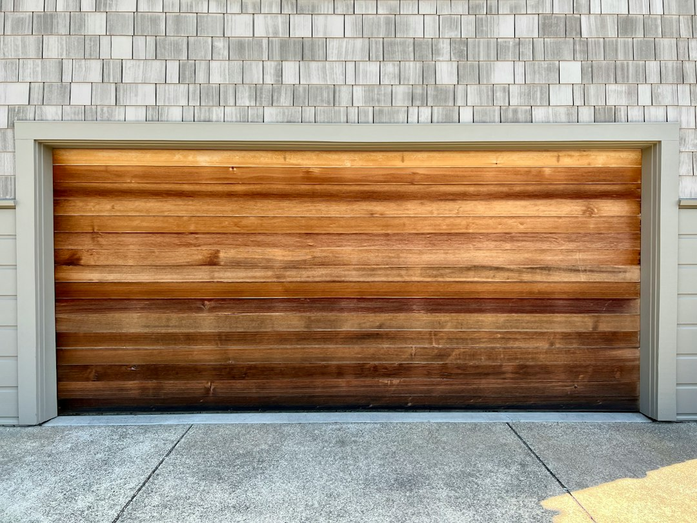

The useful first step is to define the door type, the problem, the location and how soon help is needed before contacting a provider. The source page lists 4 provider types, shows locations in Australian Capital Territory, New South Wales, Queensland, South Australia, Victoria and Western Australia, and says requests are free to submit with no obligation to proceed.
For homeowners comparing garage door repairs, the useful first move is to describe the fault clearly, choose the right service category, and prepare focused questions for a tradesperson.
Garage Door Repairs Explained
Garage Door Repairs Australia presents a way to find garage door repair and installation specialists across Australia. Its enquiry flow asks for service type, door type, problem, location and how soon help is needed, which gives owners a useful order for preparing a first message.
Begin by separating the task from the symptom. A door that needs attention can sit under repair and servicing. A new or replacement door belongs in an installation conversation. If remote operation or controls are involved, openers and automation may be the relevant category. For business premises or broader roller setups, the roller and commercial door category may be a better starting point.
Location should refine the search after the job is defined. The source page allows browsing by state and city across Australian Capital Territory, New South Wales, Queensland, South Australia, Victoria and Western Australia. Use that location filter to narrow options, then ask the business to confirm whether it currently handles the exact area and door type.
What to prepare before asking for quotes
A concise brief helps a provider decide whether the work fits its services before a visit or call is arranged. The enquiry prompt asks users to share the door type, problem, location and urgency, so keep those details together rather than sending a vague request.
- Door type: state whether it is a garage door, roller door or commercial door if you can identify it.
- Problem: describe what has changed, such as opening, closing, movement, automation or general servicing needs.
- Location: give the suburb or city so the business can confirm current coverage.
- Timing: say how soon help is needed, without assuming availability.
- Photos: ask whether images would help the provider understand the job before an appointment.
For readers comparing a Queensland example, the Brisbane repair guide is a related local page.
How to read listings without over assuming
The source page says users can read reviews, view photos, compare services and pricing, and get quotes. Treat those details as prompts for verification, especially where profile text tells readers to contact the business directly to confirm current coverage, availability and project requirements.
A listing can show that a business works in door services without proving that it is right for the exact property, schedule or door type today. Some featured descriptions mention installation, servicing, maintenance, repair or replacement. Those terms still need to be checked against the actual job.
Reviews are useful, but they should not replace scope questions. The page displays review counts and ratings for some providers, while other descriptions focus on service evidence. A careful owner checks service fit, communication, quoted inclusions and whether parts or later visits would be handled separately.
Questions that make the quote clearer
Before accepting a quote, ask questions that turn a broad service label into a defined job. The source page mentions comparing pricing and asks how soon help is needed, but it does not state fixed prices or guaranteed response times, so those details need to come from the provider.
- Which category does this job sit in: repair and servicing, installation, openers and automation, or roller and commercial doors?
- What information do you need before confirming whether you can help?
- Does the quote relate to inspection only, work on the door, work on the opener, or a combination?
- Are parts, follow up visits or additional labour included or handled separately?
- Can you confirm current coverage for this location before arranging the visit?
- What should the owner prepare before the appointment?
These questions make it easier to compare two providers on the same scope instead of comparing different assumptions.
Who this applies to
This guide is for Australian property owners or managers who are early in the process and need to decide what kind of garage door professional to contact. It suits people sorting repair and servicing, new installation, automation support, roller doors or commercial door work through published provider listings.
It is less useful for technical diagnosis, trade licensing advice, building approval triggers or warranty terms. The supplied service information does not set out those details, so owners should ask the provider directly and use appropriate consumer or building resources where a larger renovation or contract question is involved.
The strongest use of the listing information is comparison preparation. Record the category, location, timing, service description, available photos, reviews where shown and quote inclusions. Then confirm the current coverage, availability and project requirements directly with the business before deciding whether to proceed.
- Define the job. Write down the door type, visible problem, location and how soon help is needed.
- Choose the category. Match the brief to repair and servicing, installation, openers and automation, or roller and commercial doors.
- Review listings. Check service descriptions, photos where available, reviews and quote details before deciding who to contact.
- Confirm directly. Ask the provider to confirm current coverage, availability and project requirements for your property.
| Situation | Likely category | What to confirm |
|---|---|---|
| Existing door needs attention | Repair and servicing | Door type, problem, location and urgency |
| New or replacement door is being considered | Installation | Whether the provider handles the required door type |
| Remote operation or controls are involved | Openers and automation | Whether the issue is with the door, opener or both |
| Business premises or roller setup | Roller and commercial doors | Coverage, availability and project requirements |
Common questions
Is the request form free to use? The source page says requests are free to submit and carry no obligation to proceed.
What details should I include when asking for help? Include the door type, the problem, the location and how soon help is needed. Those are the details requested in the enquiry flow.
Can I look at installation and repair providers in one place? Yes. The listed categories include garage door installation, repair and servicing, openers and automation, and roller and commercial doors.
Does a listing guarantee the provider can take my job? No. Some profile descriptions tell readers to contact the business directly to confirm current coverage, availability and project requirements.
This guide covers practical questions for Australian owners choosing a garage door provider from the published listings.